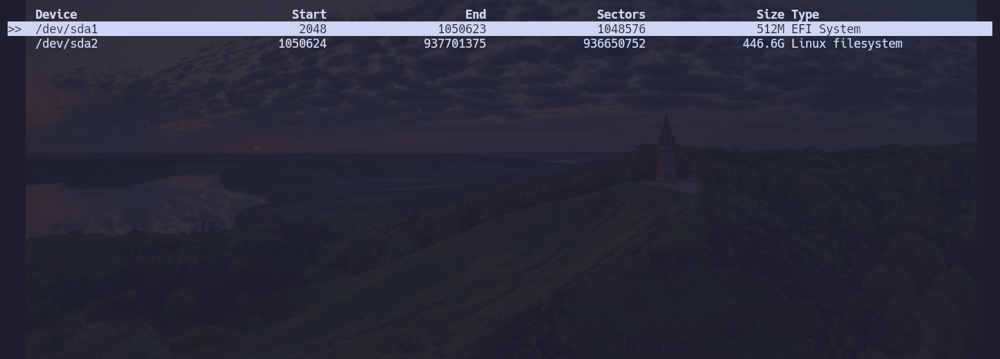

> Installing ArchLinux
The main goal of this guide is to help new users install an Arch Linux system with UEFI. We will use Btrfs as our file system because of its advanced features, including copy-on-write, snapshots, and efficient storage management. Additionally, we will set up automatic snapshots to make system recovery and data protection easier.
By the end of this guide, you will have a minimal Arch Linux system installed and ready for customization. You can then install a window manager such as Hyprland, i3wm, Sway, Bspwm, Qtile or a desktop environment like KDE Plasma.
Set up keyboard layout
If you want to know all the available keyboard maps, you must apply the next command
ls /usr/share/kbd/keymaps/**/*.map.gz
Also you can search an specific keyboard map by using grep, in this case, I am looking for an english keybaord
ls /usr/share/kbd/keymaps/**/*.map.gz | grep en
Now you can load the layout
loadkeys it
Internet Connection (wifi)
By running the next command, you should see an output like this
ping -c 1 archlinux.org

If you do not have any internet connection, you must use iwctl To start an interactive mode do:
iwctl
To connect to a network (replace "DEVICE" with your network device and "SSID" with your wifi name):
[iwd]# device list
[iwd]# station DEVICE scan
[iwd]# station DEVICE get-networks
[iwd]# station DEVICE connect SSID
System Clock
To activate the ntp you can do:
systemctl enable systemd-timesyncd.service
Disk Partitioning
| Disk | Size | Type |
|---|---|---|
| /dev/sda1 or /dev/nvme0n1p1 | 512M | EFI system |
| /dev/sda2 or /dev/nvme0n1p2 | All the remaining space | Linux filesystem |
